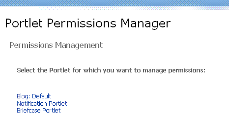

The management of administrative privileges for Academus Portlets are handled via the Portlet Permission Manager. This tool enables administrators to grant and deny permissions to specific portal groups and individuals. Portlets with permissions managed by this tools include the Blogging Portlet, the Notification Portlet and the Briefcase
